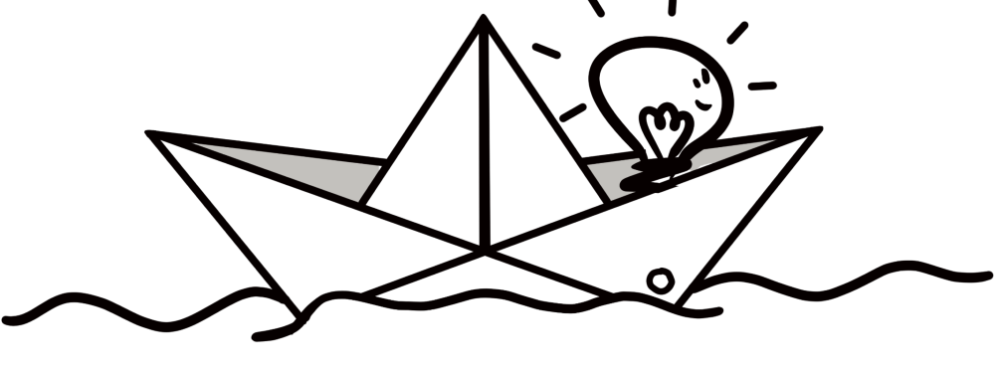

Ne laissez pas vos idées
prendre le large


Qui suis-je ?
Je suis Marie, facilitatrice graphique et facilitatrice en intelligence collective. Mon metier ? Transformer les idees en images pour clarifier, engager et faire avancer les projets. J'ai decouvert la facilitation graphique alors que je coordonais des equipes et des projets transfrontaliers. Ce qui nétait au depart quun simple outil pour mieux federer et structurer les echanges est vite devenu une evidence. Convaincue de son impact, je me suis formée a la facilitation graphique et au generative scribing pour affiner mon approche. Pour moi, le visuel est bien plus qu'un simple dessin : cest un levier puissantpour structurer la pensee et accompagner le changement. Fresqueuse du changement, j'‘aide a rendre les transformations concretes et accessibles notamment par le visuel. Mon style ? Vivant et evocateur, concu pour aller a l'essentiel sans perdre en richesse. En plus de mes interventions, je forme aussi a la facilitation graphique, pour que chacun.e puisse integrer la pensée visuelle a son quotidien, que ce soit en francais, en allemand ou en anglais. Parce que vos messages meritent détre memorables, rendons les visuels!
scroll pour en voir +